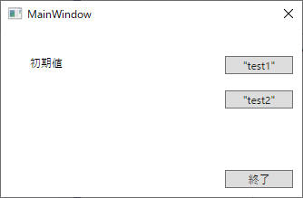

TextBlock をデータバインディングする方法について記載します。
1. 基本的な例
2. MVVM (Model-View-ViewModel) で実装
[概要]
まずは基本的な例を記載します。XAML中の TextBlock からデータバインディングする例です。
[環境]
[静止画例]

[動画例]
[プログラムソース "MainWindow.xaml"]
<Window x:Class="TextBlock.MainWindow"
xmlns="http://schemas.microsoft.com/winfx/2006/xaml/presentation"
xmlns:x="http://schemas.microsoft.com/winfx/2006/xaml"
xmlns:d="http://schemas.microsoft.com/expression/blend/2008"
xmlns:mc="http://schemas.openxmlformats.org/markup-compatibility/2006"
xmlns:local="clr-namespace:TextBlock"
mc:Ignorable="d"
Title="MainWindow" Height="225.727" Width="347.545" ResizeMode="NoResize">
<Grid>
<TextBlock x:Name="TextBlock" Text="{Binding Path=textData.Text, UpdateSourceTrigger=PropertyChanged}" HorizontalAlignment="Left" Margin="32,30,0,0" TextWrapping="Wrap" VerticalAlignment="Top"/>
<Button x:Name="btnTextChange1" Content=""test1"" Margin="0,31,10,0" VerticalAlignment="Top" HorizontalAlignment="Right" Width="75" Click="BtnTextChange1_Click"/>
<Button x:Name="btnTextChange2" Content=""test2"" Margin="0,69,10,0" VerticalAlignment="Top" HorizontalAlignment="Right" Width="75" Click="BtnTextChange2_Click"/>
<Button x:Name="btnQuit" Content="終了" Margin="0,0,10,10" RenderTransformOrigin="0.707,-0.15" HorizontalAlignment="Right" Width="75" Height="20" VerticalAlignment="Bottom" Click="BtnQuit_Click"/>
</Grid>
</Window>
[プログラムソース "MainWindow.xaml.cs"]
using System.Windows; using System.ComponentModel; // INotifyPropertyChanged namespace TextBlock { public partial class MainWindow : Window { private TextData _textData = new TextData(); public MainWindow() { InitializeComponent(); DataContext = new { textData = _textData, }; } private void BtnQuit_Click(object sender, RoutedEventArgs e) { Close(); } private void BtnTextChange1_Click(object sender, RoutedEventArgs e) { _textData.Text = "test1"; } private void BtnTextChange2_Click(object sender, RoutedEventArgs e) { _textData.Text = "test2"; } } public class TextData : INotifyPropertyChanged { private string _text = "初期値"; public string Text { get { return _text; } set { _text = value; NotifyPropertyChanged("Text"); } } #region INotifyPropertyChanged public event PropertyChangedEventHandler PropertyChanged; void NotifyPropertyChanged(string info) { if (PropertyChanged != null) { PropertyChanged(this, new PropertyChangedEventArgs(info)); } } #endregion // INotifyPropertyChanged } }
サンプルプログラム ダウンロード
同じ内容を今度は MVVM (Model-View-ViewModel) で作成してみます。
実行結果は全く同じなので省略。
[ViewModelBase.cs]
ViewModel の基本クラス (ViewModelBase) の実装です。
using System.ComponentModel; // INotifyPropertyChanged
using System.Runtime.CompilerServices; // CallerMemberName: .net Framework 4.5 以降
namespace TextBlockMvvm
{
class ViewModelBase : INotifyPropertyChanged
{
public event PropertyChangedEventHandler PropertyChanged;
protected virtual void OnPropertyChanged([CallerMemberName] string propertyName = null)
{
if (PropertyChanged != null)
{
PropertyChanged(this, new PropertyChangedEventArgs(propertyName));
}
}
}
}
[DelegateCommand.cs]
DelegateCommand の実装です。
using System;
using System.Windows.Input; // ICommand
namespace TextBlockMvvm
{
class DelegateCommand : ICommand
{
public event EventHandler CanExecuteChanged;
private readonly Action _execute;
private readonly Func<bool> _canExecute;
public DelegateCommand(Action execute)
: this(execute, () => true)
{
}
public DelegateCommand(Action execute, Func<bool> canExecute)
{
this._execute = execute;
this._canExecute = canExecute;
}
public void Execute(object parameter)
{
this._execute();
}
public bool CanExecute(object parameter)
{
return this._canExecute();
}
public void RaiseCanExecuteChanged()
{
CanExecuteChanged?.Invoke(this, EventArgs.Empty);
}
}
}
[MainWindowViewModel.cs]
アプリの ViewModel の実装です。
using System.Windows.Input; // ICommand
namespace TextBlockMvvm
{
class MainWindowViewModel : ViewModelBase
{
private string _text = "初期値";
private MainWindow _mwnd;
public ICommand QuitCommand { get; private set; }
public ICommand ChangeTextType1Command { get; private set; }
public ICommand ChangeTextType2Command { get; private set; }
public string TextSample
{
set
{
_text = value;
OnPropertyChanged();
}
get
{
return _text;
}
}
public MainWindowViewModel() : this(null)
{ }
public MainWindowViewModel(MainWindow mwnd)
{
_mwnd = mwnd;
this.QuitCommand = new DelegateCommand(() => { _mwnd?.Close(); });
this.ChangeTextType1Command = new DelegateCommand(() => { TextSample = "test1"; });
this.ChangeTextType2Command = new DelegateCommand(() => { TextSample = "test2"; });
}
}
}
[MainWindow.xaml]
アプリの View の実装です。
こちらでコメントアウトしている DataContext 部分を有効化して 後述の MainWindow() 中の
DataContext 部分をコメントアウトしても動作します。
ただしこの場合 [終了] ボタンをクリックしてもアプリを終了できなくなります。
<Window x:Class="TextBlockMvvm.MainWindow"
xmlns="http://schemas.microsoft.com/winfx/2006/xaml/presentation"
xmlns:x="http://schemas.microsoft.com/winfx/2006/xaml"
xmlns:d="http://schemas.microsoft.com/expression/blend/2008"
xmlns:mc="http://schemas.openxmlformats.org/markup-compatibility/2006"
xmlns:local="clr-namespace:TextBlockMvvm"
mc:Ignorable="d"
Title="MainWindow" Height="225.727" Width="347.545" ResizeMode="NoResize">
<!--<Window.DataContext>
<local:MainWindowViewModel/>
</Window.DataContext>-->
<Grid>
<TextBlock x:Name="TextBlock" Text="{Binding TextSample, UpdateSourceTrigger=PropertyChanged}" HorizontalAlignment="Left" Margin="32,30,0,0" TextWrapping="Wrap" VerticalAlignment="Top"/>
<Button x:Name="btnTextChange1" Content=""test1"" Command="{Binding ChangeTextType1Command}" Margin="0,31,10,0" VerticalAlignment="Top" HorizontalAlignment="Right" Width="75"/>
<Button x:Name="btnTextChange2" Content=""test2"" Command="{Binding ChangeTextType2Command}" Margin="0,69,10,0" VerticalAlignment="Top" HorizontalAlignment="Right" Width="75"/>
<Button x:Name="btnQuit" Content="終了" Command="{Binding QuitCommand}" Margin="0,0,10,10" RenderTransformOrigin="0.707,-0.15" HorizontalAlignment="Right" Width="75" Height="20" VerticalAlignment="Bottom"/>
</Grid>
</Window>
[MainWindow.xaml.cs]
new MainWindowViewModel() の引数に this を指定しているのは、MainWindowViewModel.cs 中で Close() を実行できるようにするために行っています。
using System.Windows;
namespace TextBlockMvvm
{
public partial class MainWindow : Window
{
public MainWindow()
{
InitializeComponent();
DataContext = new MainWindowViewModel(this);
}
}
}
サンプルプログラム ダウンロード
変更履歴：